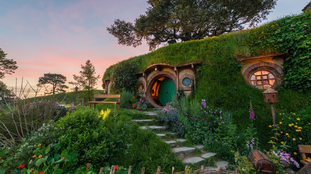
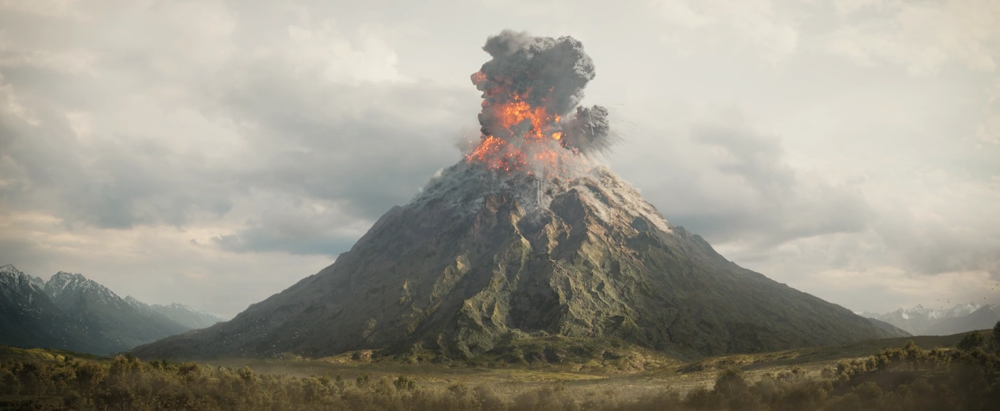
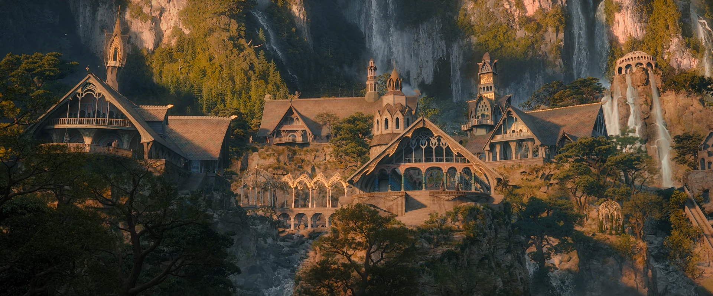
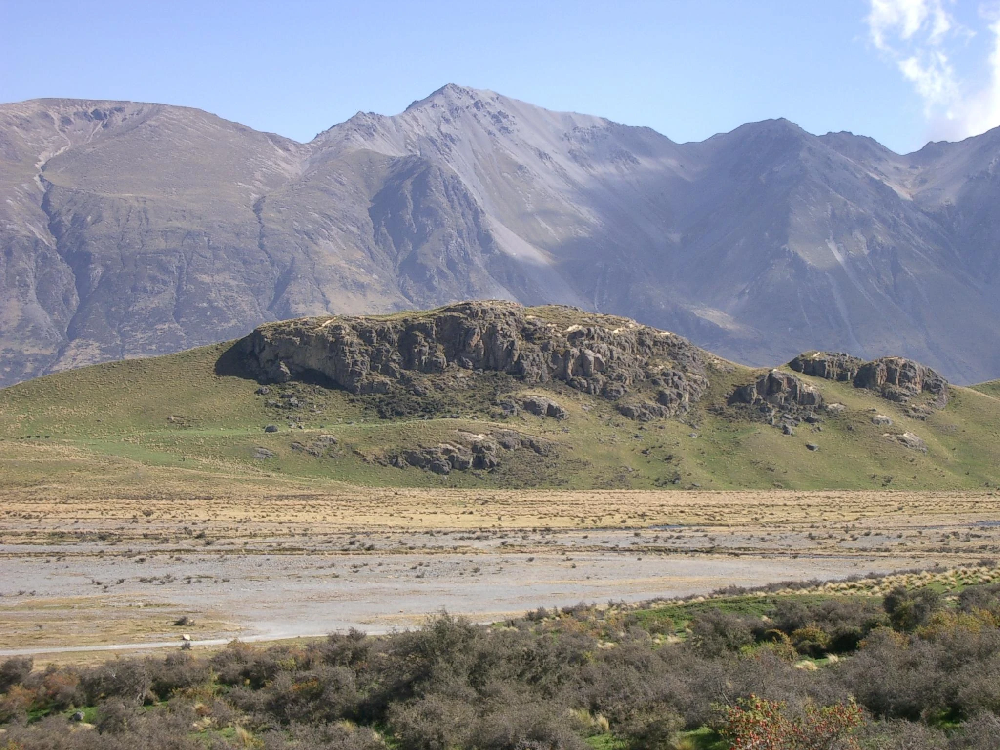
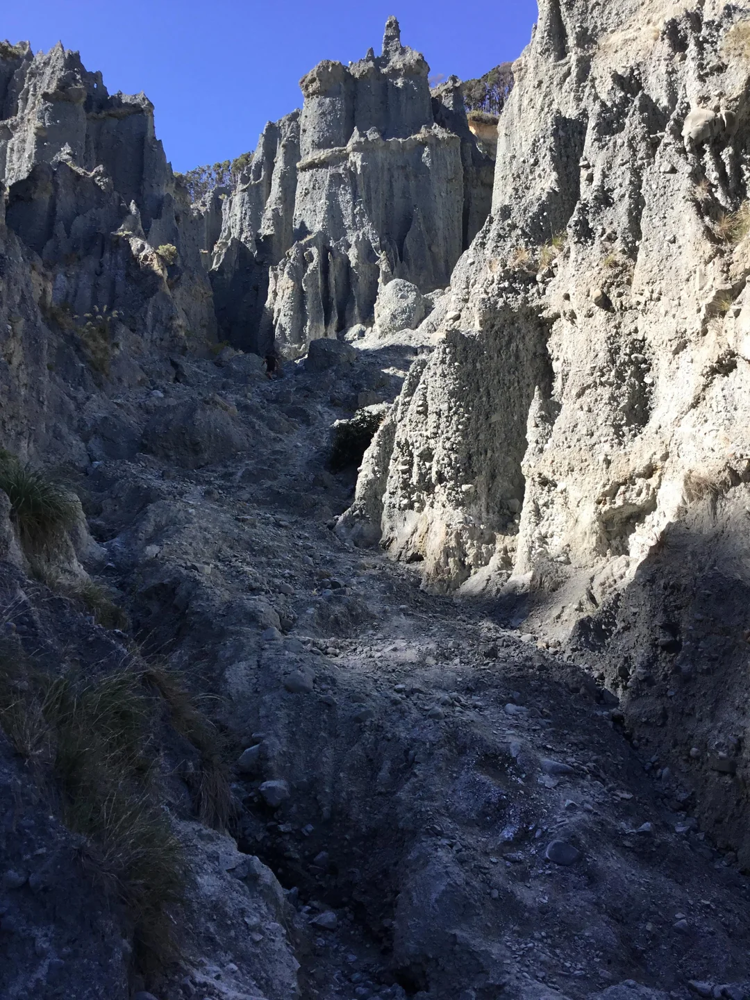

Location 01
The Shire: Hobbiton, Matamata
Nestled in the rolling green hills of the Waikato region in New Zealand, the Alexander family sheep farm was transformed into the idyllic village of Hobbiton. The permanent movie set remains fully intact, featuring 44 Hobbit holes, including Bag End, and the Green Dragon Inn.
Find on Map
Location 02
Mount Doom: Mount Ngauruhoe
The desolate and terrifying land of Mordor was largely filmed in Tongariro National Park. The perfectly conical, active stratovolcano Mount Ngauruhoe stood in for Mount Doom, where the One Ring was forged and ultimately destroyed.
Find on Map
Location 03
Rivendell: Kaitoke Regional Park
The enchanting elven outpost of Rivendell was brought to life in the lush, temperate rainforests of Kaitoke Regional Park near Wellington. While the elaborate sets were removed, the exact filming locations and the surrounding ancient trees are marked for visitors.
Find on Map
Location 04
Edoras, Rohan: Mount Sunday
Rising from the flat plains of the Rangitata River valley, Mount Sunday is the dramatic, sheer-sided hill that served as the capital of Rohan. The massive Golden Hall of Meduseld was built atop this peak, offering sweeping views of the Southern Alps.
Find on Map
Location 05
Paths of the Dead: Putangirua Pinnacles
When Aragorn, Legolas, and Gimli travel to summon the Army of the Dead, they ride through a menacing canyon of towering, crumbling rock spires. This eerie landscape was filmed at the Putangirua Pinnacles in the Wairarapa region.
Find on Map